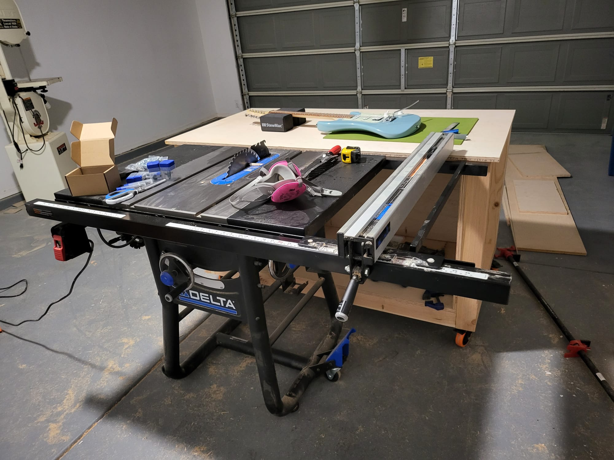

Workshop
Workshop - Puerto Rico
I've spent most of my time as a luthier in this wall of a shed at my parent's house back in Puerto Rico. It was fairly small but I made it work as best as I could. The centerpiece was a workbench that I built out of laminated 2x4's and a 4x4 frame with wheels for portability. I flattened it using a router sled so that it can be used as an assembly table and as a reference for measurements. It has an integrated contractor table saw which allows the surface to work as an outfeed table. I eventually also integrated a router table insert into the top as well to save more space. On the wall I made a modular french cleat system which allowed me to hang things and move them around as needed.


Workshop - Arizona (Work in Progress)
I moved to Arizona for better opportunities and that meant the daunting task of moving my entire workshop. This is still very much a work in progress but I have made a simple workbench to serve as an outfeed table for my table saw and a couple other things. One of the things I'm excited about is having much more space which has already allowed me to get a CNC machine and other equipment I've been dreaming of getting for years.
